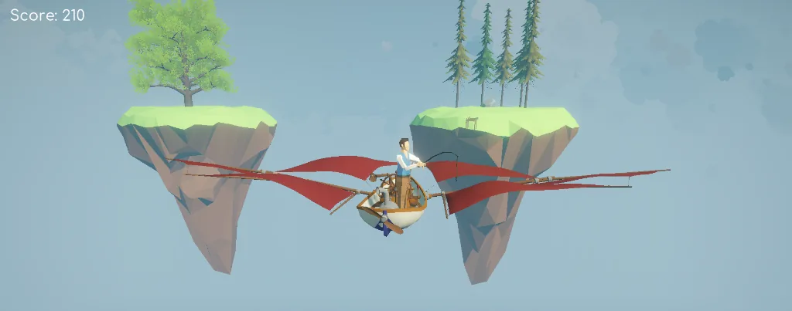

Fishing in the Sky is a relaxing fishing game set in the sky. The game is mostly luck-based, with a little bit of skill involved in the button-mashing mechanic. Made in Unity3D URP.
Created by:
Robbie Ma
Fishing in the sky
A relaxing fishing minigame.
